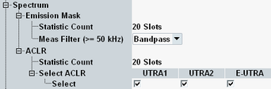

The following "Measurement Control" parameters configure the spectrum measurement settings.

Defines the number of measurement intervals per measurement cycle for emission mask and ACLR measurements.
One measurement interval is completed when the R&S CMW has measured a full slot of the configured "Measure Subframe".
Remote command:Selects the resolution filter type for filter bandwidths of 50 kHz and greater (Gaussian or bandpass filter). For filters with smaller bandwidth, the type is fixed (Gaussian). The filter bandwidth to be used can be configured per emission mask area as part of the limits.
Remote command:Specifies which adjacent channels are evaluated: first adjacent UTRA channels, second adjacent UTRA channels or first adjacent E-UTRA channels. Any combinations are supported, including the activation of all three options in parallel.
Remote command: